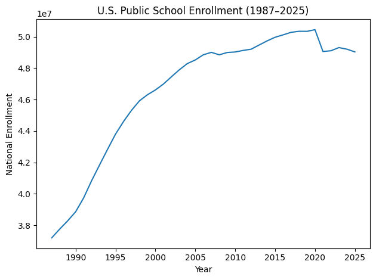

Addressing Population Bias
This part of our presentation explains how we made comparisons fair across states with very different student populations. Our goal was to focus on risk, not just raw totals.
The Problem
Raw incident counts create a built-in bias. States with more students naturally have more chances for incidents, so higher totals do not automatically mean higher risk.
More students means more schools, more activity, and more opportunities for incidents to occur.
That can push the raw incident count up even when the state is not more dangerous on a student-by-student basis.
Fewer students means fewer opportunities for incidents in raw totals.
That can make a small state look safer in a simple count, even when the risk per student is actually higher.
Why This Matters
Without an adjustment for population size, the analysis could confuse state size with actual risk.
What would go wrong for large states
- Large states would appear worse simply because they have more students.
- Higher totals would be read as higher danger, even when those totals mainly reflect state size.
- This is the core form of population bias in the project.
What would go wrong for small states
- Small states could look safer than they really are because their totals start from a smaller student base.
- The comparison would reward or punish states for size rather than for risk.
- That would create an unfair state ranking from the start.
How We Fixed It
We corrected the bias by moving from raw counts to enrollment-adjusted rates.
We attached student enrollment to each state and year
The project joined incident counts to enrollment using the shared fields State and Year.
We converted counts into rates
Instead of asking “How many incidents happened?”, we asked “How many incidents happened relative to the number of students?”
We based comparison on risk
This changed the comparison from raw totals to a fairer measure of how likely incidents were in each state-year setting, regardless of state size.
Risk vs Size
A core strength of the project is that it separates state size from state risk.
Size
- Size refers to how many students are in the state.
- Large states naturally have more exposure simply because more students are present.
- Size should explain the opportunity for incidents, not define the level of risk by itself.
Risk
- Risk refers to incidents relative to the student population.
- A large state can have a high count but still a lower risk once enrollment is considered.
- A small state can have fewer incidents but still a higher risk relative to its student population.
Supporting Adjustments
The project did more than divide by enrollment. It also checked for other places where bias could enter and added steps to keep the comparison fair.
Reporting and coverage bias
The project identified a break in the enrollment data and rebuilt the series using the same source template and the same inclusion rules across years.
Why this matters: if the enrollment base changes because of reporting rules instead of real student counts, the risk measure becomes distorted.
Historical comparability bias
The project restricted the main comparison to 1987 forward so incident classification, enrollment coverage, and policy coverage were more consistent.
Why this matters: fair comparison requires a time period where the data is measured in a similar way.
Selection bias risk
The project used one row for each state in each year, including years with zero incidents.
Why this matters: states with fewer incidents are still fully represented instead of disappearing from the comparison.
Matching bias risk
State names were standardized, one enrollment value was kept for each state-year, and the merge was checked before rates were calculated.
Why this matters: a fair rate depends on pairing each incident record with the correct student population, not the wrong one or a missing one.
Population bias in the main comparison
The project kept enrollment inside the main comparison itself so the final comparison stayed tied to student population rather than raw totals.
Why this matters: the bias correction is built into the comparison from start to finish, not added as an afterthought.
Visual Example
These visuals show why enrollment matters and how the project separates population size from population-adjusted risk.



Key Takeaway
The project is designed so that population size does not decide the outcome of the comparison.
What this means for the audience
- Large states are not automatically labeled as higher-risk just because they have more students.
- Small states are not automatically treated as lower-risk just because their totals are smaller.
- The comparison is built to be fair across states regardless of population size.
Bottom line
Every major adjustment in this part of the project points back to the same idea: remove the advantage or disadvantage created by state size, and compare states on a common risk-based footing.